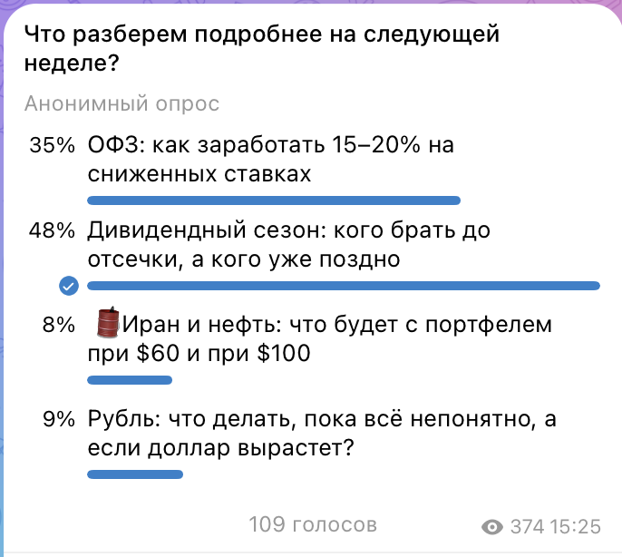
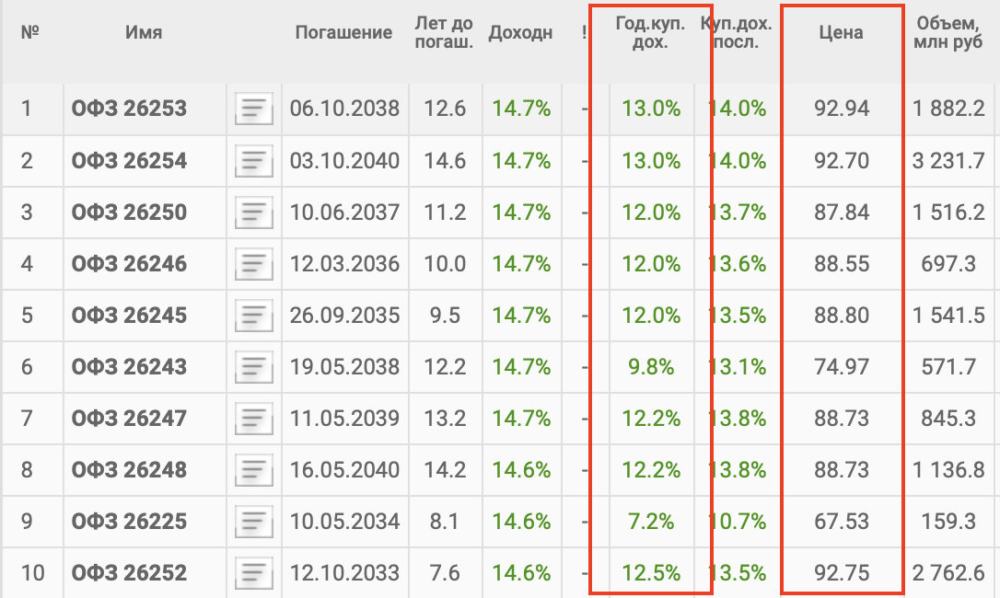
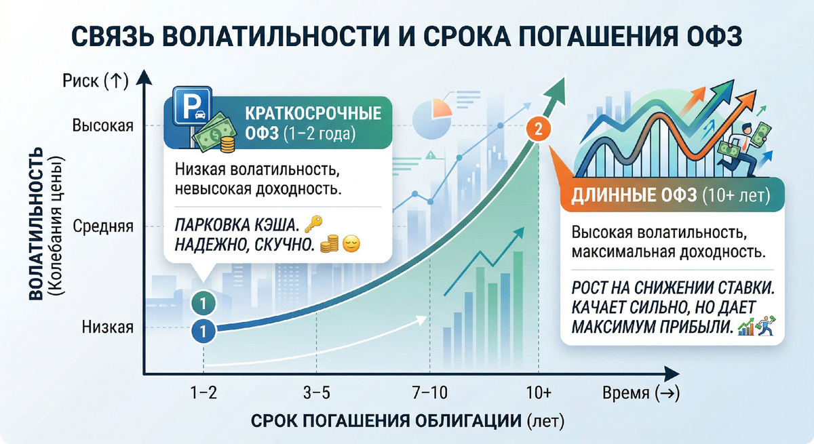

Пока все ловили ракеты в крипте, скучные ОФЗ дали 30% годовых
Да-да, это не опечатка. В 2025 году самые надёжные государственные бумаги принесли доходность выше, чем большинство хайповых активов и, уж тем более, депозиты (где многие ещё и на налог попали).
И знаете что? В 2026 году это окно возможностей всё ещё открыто. Ставка ЦБ сейчас 15%, и рынок ждёт её дальнейшего снижения.
Чтобы понять, что сейчас реально волнует инвесторов, я провела опрос в своих соцсетях. Тема ОФЗ и заработка на снижении ставок стала одной из самых востребованных — её выбрали 35% в Telegram и большинство в MAX. Все хотят разобраться в потоке новостей и найти понятные, просчитываемые способы заработать.

Почему ОФЗ выстрелили и продолжают расти
Причина в том, что ЦБ начал цикл снижения ключевой ставки.
Пик ставок 21% держался с октября 2024 по июнь 2025 — это был исторический максимум. ЦБ жёстко боролся с инфляцией, и облигации в тот момент стоили дёшево. А потом логично началось снижение: июнь 2025 — первое до 20%, потом 18%, 17%, 16,5%, 16%, 15,5%, а в марте 2026 мы увидели уже 15%.
Минус 6 процентных пунктов менее чем за год. Это быстро — и это уже отыграно в ценах на облигации, отсюда те самые 30% доходности в 2025-м.
Но история не закончилась. Сам ЦБ прогнозирует на конец 2026 ставку около 13–14%, аналитики крупных банков ещё оптимистичнее — до 12–13%. Это значит, что впереди ещё 2–3 процентных пункта снижения, и этот потенциал пока не реализован. А когда ставка падает, старые выпуски облигаций растут в цене. Это базовая математика рынка.
Откуда берутся 15–20% доходности
Когда ставка падает, вы зарабатываете дважды. Первый источник — купон, который платят регулярно. Второй — рост цены самой облигации, которую можно продать дороже, чем купили.
Допустим, вы покупаете длинную ОФЗ с доходностью 14,5% годовых. Если к концу года ставка ЦБ упадёт ещё на 3 пункта, доходность по облигациям снизится, скажем, до 11%. Это значит, что цена ваших облигаций вырастет примерно на 20%. Плюс купон — ещё около 12%. Итого потенциал: больше 30%.
Почему я говорю про 15–20%, а не 30%? Потому что 15–20% — это консервативная оценка, я всегда реалистично смотрю на вещи. Если снижение ставок будет меньше, если инфляция не уйдёт к цели — результат будет скромнее. Лучше ориентироваться на реалистичный сценарий, чем потом разочаровываться. А если ещё добавить льготу ИИС 1 или 3 типа — это +13% к доходности в первый год.

Ошибки в выборе: почему короткие бумаги вас не спасут
Это главная ошибка, которую я вижу на диагностике портфелей. Человек хочет зафиксировать высокую доходность на годы, но набрал коротких ОФЗ с погашением через год. Логика отсутствует: когда бумаги погасятся, ставка ЦБ уже упадёт до 12%, и перекладывать деньги придётся под смешные проценты. Люди часто путают мнимую надёжность с упущенной выгодой.
Не все ОФЗ работают одинаково. Выбор зависит от того, сколько вы готовы ждать и какие колебания цены можете спокойно переносить.
- Длинные ОФЗ — погашение через 10 лет и больше. Максимальный потенциал роста (25–30%), но и качает сильнее всего: могут упасть на 10% за месяц, если рынок занервничает.
- Средние ОФЗ — погашение через 3–5 лет. Баланс между доходностью и стабильностью: потенциал 15–20%, качели умеренные.
- Короткие ОФЗ — погашение через 1–2 года. Минимальный риск, но и потенциал скромнее. Подойдут, если задача — просто вложить деньги спокойнее и выгоднее, чем на депозите.
Чем длиннее облигация, тем больше можно заработать — но и тем сильнее будет трясти по дороге.

Что может пойти не так: честно о рисках
ОФЗ сейчас — это понятный математический расчёт, а не игра в рулетку. Но эта стратегия не прощает истерик.
- Инфляция застрянет. Если она останется выше 5–6%, ЦБ поставит паузу в снижении ставки. Купон вы получите, но рост тела облигации будет скромнее — ожидаемые 20% превратятся в 10–12%.
- Волатильность вытряхнет всех «хомяков». Длинные ОФЗ — это не депозит. Сегодня вы купили по 86 рублей (ниже номинала), а завтра на жёсткой геополитической новости они упали до 80.
- Главный риск — это вы сами. Пугаетесь красных цифр в приложении брокера, продаёте в панике и фиксируете убыток. Купили длинный выпуск? Всё, сидите ровно. Стратегия работает только для тех, кто готов держать позицию 2–3 года и не дёргаться.
Что делать дальше
ОФЗ — это лишь один из рыночных трендов, на которых можно сделать капитал. Успешное инвестирование требует системного подхода и понимания всех доступных инструментов.
Собрать систему, а не угадывать
В Академии разбираем ОФЗ и другие инструменты на практике — и собираем портфель под вашу цель и ваш характер.
В академию →Материал носит образовательный характер и не является индивидуальной инвестиционной рекомендацией. Доходности прошлых периодов не гарантируют доходности в будущем. 16+